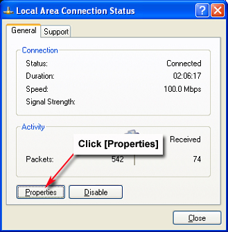
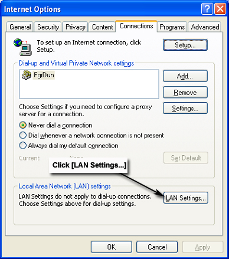
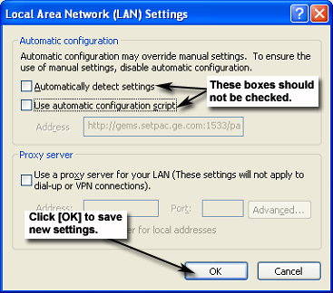

Connecting to Magmon3 with a Laptop
1 Connecting Via The Building Network
This procedure is used to log into Magmon from the Service Browser on the customer's scanner, or from a laptop attached to the customer's network.
1.1 Prerequisites
-
Magmon3 was previously configured for network operation using a direct connection between this device and a laptop.
-
Magmon3 has been successfully communicating over the building network.
1.2 Precondition
Magmon3 is connected to the building network via Magmon3 – J5 port.
1.3 Procedure
-
Find the IP address assigned to the Magmon3 by pressing Data, then Up repeatedly until the IP Address displays.
-
Write down the IP Address for use later.
-
Press Service Mode repeatedly until the display shows Start Web Mode? (Yes/No) Same IP. Press Yes to activate Web Mode.
-
Connect the laptop to the building network using a CAT5-type network cable.
-
Open a web browser session on the laptop.
-
Type the Magmon3's IP address (recorded earlier) into the laptop browser's address bar, and click
 (Go). The browser should display the Magmon3 Service Login screen.
(Go). The browser should display the Magmon3 Service Login screen. -
Go to Login Modes for further instructions.
2 Direct Network Cable Connection to Laptop and Magmon3
Use this procedure for these conditions:
-
First-time setup of the Magmon3.
2.1 Precondition
Laptop connected directly to Magmon3 – J5 port using a crossover CAT5-type network cable.
2.2 Procedure
-
Right-click on (My Network Places) on the laptop's desktop.
-
Select Properties from the menu. The Network Connections window will open.
Figure 1. Network Connections Window

-
Disable the wireless network connection (if enabled). Right-click on Wireless Network Connection, and select Disable.
-
Double-click Local Area Connection. The Local Area Connection Status window will open.
Figure 2. Local Area Connection Status Window

note:Depending on the laptop's configuration, the Local Area Connection Properties window (Figure 3) may be display. In this case, skip to Step 6.
-
Click Properties to open the Local Area Connection Properties window shown below.
-
Select Internet Protocol (TCP/IP), and click Properties. The Internet Protocol Properties window (Figure 4) will open.
Figure 3. Local Area Connection Properties Window

-
Click Use the following IP address on the Internet Protocol (TCP/IP) Properties window.
Figure 4. Internet Protocol (TCP/IP) Properties Window

-
Enter the following addresses as shown in Figure 4:
-
Type 192.168.0.2 in the IP address box.
-
Type 255.255.0.0 in the Subnet mask box.
-
-
Click OK to save settings and exit.
-
Click OK or Close to save the new Local Area Connection Properties. This may take a moment. Make sure to close the Local Area Connection Status window.
Figure 5. Local Area Connection Properties Window

-
Launch Internet Explorer from the laptop's desktop.
-
In Internet Explorer, select as shown below.
Figure 6. Internet Explorer Menu Selections

-
In the Internet Options window, click the Connections tab.
Figure 7. Internet Options Window

-
Click LAN Settings on the Internet Options window.
Figure 8. Internet Options Connection Tab

-
When the Local Area Network (LAN) Settings window opens, make sure the Automatically detect settings and Use automatic configuration script boxes are not selected.
Figure 9. Local Area Network (LAN) Settings Window

-
Click OK to save the LAN Settings. Click OK to save all settings and close the Internet Options window.
Figure 10. Internet Options Window

-
On the laptop, select and enter to open a Command Prompt window. (Another option is to go to .)
-
Type ping 192.168.0.1Enter. If the Magmon3 unit responds (Figure 11), close the Command Prompt window, and proceed to the next step. If not, recheck your settings.
Figure 11. Command Prompt Window

-
Return to Internet Explorer and enter the Magmon3's IP address (192.168.0.1) in the address field. Click
(Go). The browser should display
the Magmon3 Service Login screen.Figure 12. Magmon3 Service Login Screen

-
Go to Login Modes for further instructions.